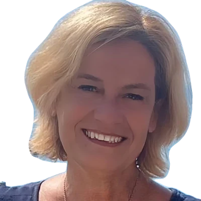
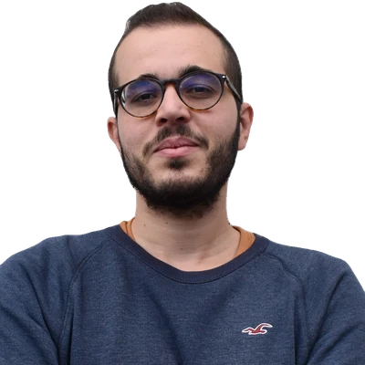
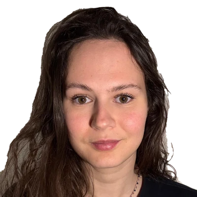
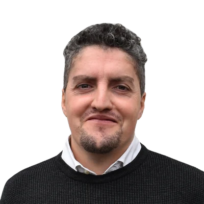
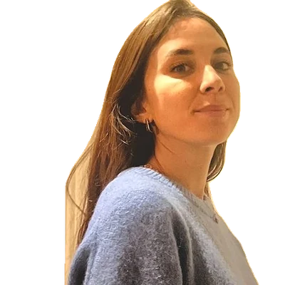
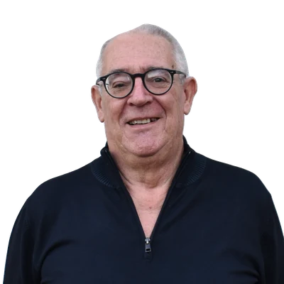

Fondazione Don Carlo Gnocchi er en italiensk ideell stiftelse som i mer enn 70 år har tatt seg av personer med funksjonsnedsettelser, eldre og pasienter som trenger rehabilitering, gjennom et nettverk av sentre i ni italienske regioner. Senteret i Firenze er godkjent av det italienske helsedepartementet som vitenskapelig institutt for forskning, sykehusbehandling og helsetjenester (IRCCS) innen rehabilitering. Senteret har flere forskningslaboratorier, blant annet PROMISE@LAB og enheten for kompleks nevromotorisk rehabilitering, som drives sammen med Universitetet i Firenze.
Rolle i INTEGRA
FDG koordinerer prosjektet og leder arbeidspakken for prosjektledelse (WP1). FDG har utviklet og sertifisert telerehabiliteringsplattformen MAIA, som brukes i utprøvingene i Italia, Spania og Romania. FDG leder også arbeidet med systemkravene, protokollen for pilotstudien og etisk godkjenning, og rammeverket for vurdering av effekter. I tillegg har FDG ansvaret for det urbane utprøvingsstedet i Italia.
Team

Francesca Cecchi Hovedforsker og prosjektkoordinator
Michele Piazzini Prosjektleder
Maria Luigia del Vicario
Giulio Cherubini
Virginia Ambrogi
Marco Baccini